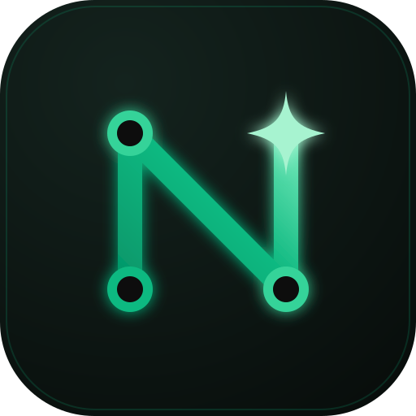

لینک اشتراک خود را وارد کنید تا سرورها دریافت و بهترین گزینه پیشنهاد شود.
۱) لینک اشتراک را از ارائهدهنده سرویس بگیرید.۲) آن را در کادر بالا بچسبانید.۳) پس از نمایش سرور پیشنهادی، دکمه «اتصال» را بزنید.
Nova Connect — مسیر شبکه: System Proxy